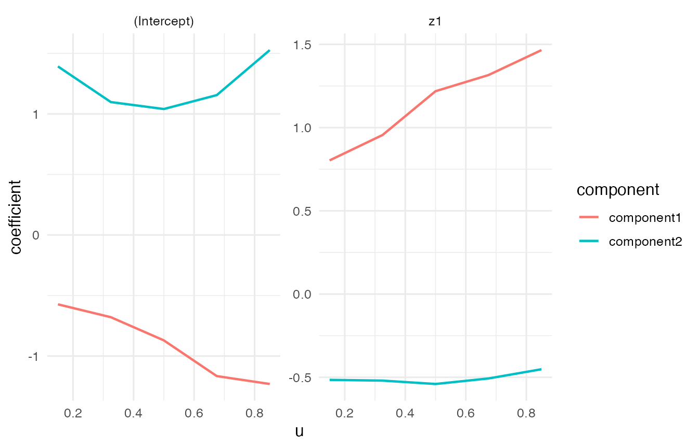
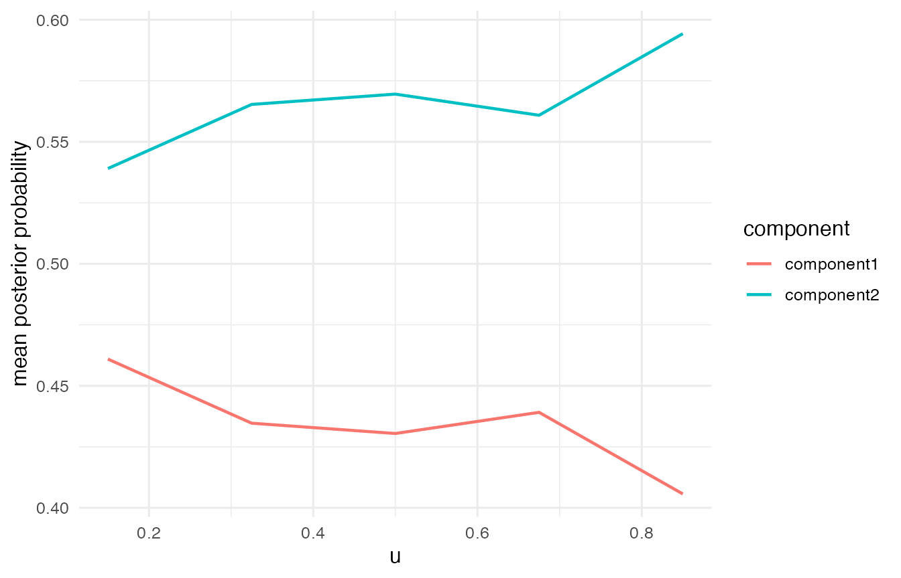

This tutorial shows the Binomial family in VCMoE. Expert coefficients are on the logit success-probability scale, and predict(type = "mean") returns the marginal success probability.
The worked example uses grouped Binomial data because the repeated trials make the latent components visually clearer than a very small Bernoulli example. Bernoulli data use the same syntax with a 0/1 response column.
Simulate grouped Binomial data
set.seed(52)
sim <- simulate_vcmoe_binomial(
n = 300,
k = 2,
seed = 52,
trials = 30,
separation = 2.5,
scenario = "well_separated"
)
head(sim$data)
#> success failure trials u z1 x1 component
#> 1 4 26 30 0.00796557 -1.7061833 -0.3634315 1
#> 2 25 5 30 0.01386884 0.4538073 -2.7805432 2
#> 3 23 7 30 0.01645913 -0.2629754 0.7119834 2
#> 4 4 26 30 0.01921534 -1.1226504 -0.8331669 1
#> 5 26 4 30 0.02078965 1.1584983 0.6500925 2
#> 6 16 14 30 0.03155497 1.0336287 1.2031339 1
summary(sim$data$success / sim$data$trials)
#> Min. 1st Qu. Median Mean 3rd Qu. Max.
#> 0.0000 0.3000 0.6667 0.5706 0.8000 1.0000Grouped Binomial responses use the standard R two-column response form: cbind(success, failure).
fit <- vcmoe_fit(
cbind(success, failure) ~ z1 | x1,
data = sim$data,
u = "u",
family = "binomial",
k = 2,
bandwidth = 0.50,
u_grid = seq(0.15, 0.85, length.out = 5),
control = list(maxit = 100, n_starts = 2, seed = 53, warn_ambiguous = FALSE)
)
fit
#> VCMoE fit
#> family: binomial
#> components: 2
#> label alignment: global
#> kernel: epanechnikov (density_over_bandwidth)
#> local basis: (u - u0) / bandwidth
#> u scale: unit
#> grid points: 5
#> bandwidth: 0.5
#> converged grid points: 5/5Coefficients and predictions
coef(fit, "expert")[, , "z1"]
#> component
#> u component1 component2
#> 0.15 0.8029945 -0.5155188
#> 0.325 0.9555815 -0.5198394
#> 0.5 1.2186311 -0.5401502
#> 0.675 1.3156178 -0.5069988
#> 0.85 1.4655065 -0.4516495Component-specific predictions are success probabilities, and the marginal mean is the component-probability-weighted success probability.
head(predict(fit, type = "component"))
#> component1 component2
#> [1,] 0.1253160 0.9065391
#> [2,] 0.4480473 0.7610736
#> [3,] 0.3134292 0.8217266
#> [4,] 0.1862671 0.8777473
#> [5,] 0.5883866 0.6889668
#> [6,] 0.5639060 0.7025908
head(predict(fit, type = "mean"))
#> [1] 0.6632357 0.6858761 0.6455608 0.6725732 0.6543162 0.6522158
head(predict(fit, type = "posterior"))
#> [,1] [,2]
#> [1,] 1.000000e+00 3.391119e-22
#> [2,] 3.677410e-05 9.999632e-01
#> [3,] 1.571375e-06 9.999984e-01
#> [4,] 1.000000e+00 4.612266e-19
#> [5,] 2.594310e-02 9.740569e-01
#> [6,] 7.822688e-01 2.177312e-01The posterior probabilities are intentionally sharp in this tutorial example, so the component assignment is easy to see.
Diagnostics and plots
diagnostics <- vcmoe_diagnostics(fit)
diagnostics[, c("u", "converged", "ambiguous", "posterior_entropy", "effective_n")]
#> u converged ambiguous posterior_entropy effective_n
#> 1 0.150 TRUE FALSE 0.1259956 160.3468
#> 2 0.325 TRUE FALSE 0.1292298 212.7115
#> 3 0.500 TRUE FALSE 0.1384023 248.7369
#> 4 0.675 TRUE FALSE 0.1185062 224.5590
#> 5 0.850 TRUE FALSE 0.1008948 176.0281
plot_coefficients(fit, "expert")
plot_posterior(fit)
Bernoulli response format
For Bernoulli data, use a single 0/1 response column:
bern <- simulate_vcmoe_binomial(n = 300, k = 2, trials = 1)
bern_fit <- vcmoe_fit(
y ~ z1 | x1,
data = bern$data,
u = "u",
family = "binomial",
k = 2,
bandwidth = 0.50
)The Bernoulli model has the same interpretation, but the grouped example above is cleaner for a short tutorial because each observation carries more Binomial information.